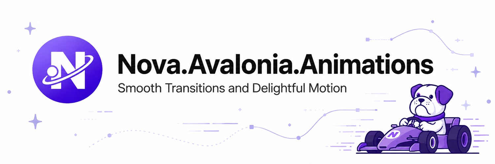
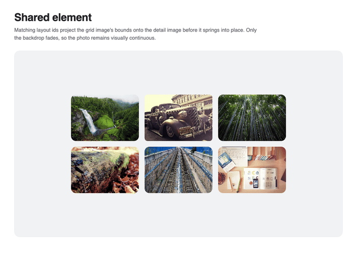

Welcome to Nova.Avalonia.Animations
Nova.Avalonia.Animations is a cross-platform motion library for Avalonia. It combines physics-based springs, interruptible fluent animations, XAML behaviours, FLIP layout projection, presence, paths, text helpers, page transitions, and optional SkSL effects.

Start here
- Open the web gallery to explore the interactive samples.
- Getting started installs the packages and creates a first animation.
- Timing explains springs, tweens, delays, repeats, and interruption.
- Fluent animations covers channels, arbitrary Avalonia properties, playback control, and cancellation.
- Interactions adds hover, press, focus, drag, swipe, in-view, variants, and loops from XAML.
- Presence and layout covers enter/exit animation, animated reflow, and shared elements.
- Runtime shaders introduces the optional SkSL package.
Motion designed for interruption
Springs preserve velocity when an active channel is retargeted, so interaction changes do not restart from rest. Every fluent animation returns an awaitable MotionHandle with pause, resume, reverse, seek, cancellation, stop, and completion controls.
await Motion.Animate(Card)
.X(120)
.Y(-8)
.Scale(1.05)
.Opacity(1)
.With(Spring.Bouncy)
.Start();
Declarative when it should be
Common interaction and lifecycle states can stay beside the control in XAML.
<Border nova:Motion.WhileHover="scale:1.05; y:-8"
nova:Motion.WhilePress="scale:0.96"
nova:Motion.Enter="opacity:0; y:16"
nova:Motion.Exit="opacity:0; y:-8" />

Requirements
- .NET 8 or later
- Avalonia 12 or later
- Skia rendering when using
Nova.Avalonia.Animations.Shaders